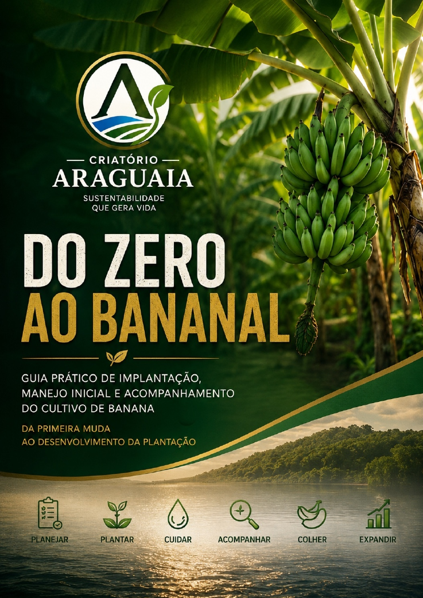

Pequenos produtores
Para profissionalizar a produção.
Manual digital • Criatório Araguaia
Guia prático de implantação, manejo inicial e acompanhamento do cultivo de banana.

Da experiência de campo para uma sequência didática
Este material acompanha uma área de plantio e organiza os fundamentos para quem deseja iniciar, estruturar e acompanhar a implantação de um bananal.
A jornada conecta planejamento, preparação da área, escolha das mudas, implantação, irrigação, acompanhamento, controle de perdas, gestão de custos e expansão.
“Não é necessário começar grande. É necessário começar organizado.”
Para profissionalizar a produção.
Para sítios e chácaras iniciando o cultivo.
Para famílias que buscam complemento de renda.
Para entender os primeiros passos antes de investir alto.
A primeira muda é apenas o começo
Aprenda no seu ritmo
Registre. Calcule. Acompanhe.
Os dados ficam somente neste navegador. Nenhuma informação é enviada ou compartilhada.
Marque cada etapa conforme seu planejamento.
Investimento inicial ÷ mudas implantadas.
O valor representa apenas o investimento inicial médio, não o custo total da produção.
Mudas vivas ÷ mudas plantadas × 100.
Uma rotina simples e organizada
Registre quantidade, localização e fotografias iniciais.
Observe estabilidade, irrigação e possíveis danos precoces.
Avalie a taxa de sobrevivência e as folhas novas.
Compare os registros atuais com o Dia 0.
Observe vigor da planta e limpeza da área.
Capítulo final
O resultado não aparece pronto. Ele começa pequeno — com planejamento, acompanhamento e aprendizado.
Continuar aprendendoAcesso ao material completo
Ao continuar, você será direcionado ao checkout da Hotmart. A plataforma confirma o pagamento e libera o download protegido do PDF.
Este material possui finalidade educacional e introdutória. Cultivar, espaçamento, correção do solo, fertilização, irrigação, defensivos, controle fitossanitário, produtividade e demais recomendações agronômicas devem considerar as condições específicas da propriedade, clima, solo e sistema produtivo. Para implantação comercial e recomendações técnicas, consulte engenheiro agrônomo ou profissional legalmente habilitado.